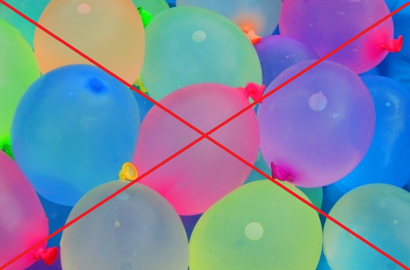

<!DOCTYPE html>
<html>
    <head>
        <meta name="viewport" content="width=device-width, initial-scale=1">
        <style>
        body {
          margin: 0;
          font-family: Arial, Helvetica, sans-serif;
        }
        
        .topnav {
          overflow: hidden;
          background-color: #333;
        }
        
        .topnav a {
          float: left;
          color: #f2f2f2;
          text-align: center;
          padding: 14px 16px;
          text-decoration: none;
          font-size: 17px;
        }
        
        .topnav a:hover {
          background-color: #ddd;
          color: black;
        }
        
        .topnav a.active {
          background-color: #04AA6D;
          color: white;
        }
        </style>

        <title>
            SSC in SDG
        </title>
<link rel="shortcut icon" type="image/png" href="favicon.png">
    </head>
</html>
<style>
body{
    background-image: url("BG.jpg"); 
    background-repeat: no-repeat;
    background-size: 100% 100%;  
    background-attachment: fixed;
}
h1{
    font-family: "Agency FB";
    font-weight: bolder;
    background-color: green;
    font-style: italic;
}

img {
  display: block;
  margin-left: auto;
  margin-right: auto;
  width: 50%;
  height: 50%;
}

</style>

<body>
    <div class="topnav">
        <a href="index.html">Home</a>
        <a href="SCIENCE.html">Science</a>
        <a class="active" href="SSC.html">SSC</a>
        <a href="ENGLISH.html">English</a>
        <a href="Hindi.html">Hindi</a>
        <a href="Maths.html">Maths</a>
      </div>

    <h1 align="center">
        Eco-Friendly way to Celebrate Holi
     </h1>
<hr size="7" color= "green">
    <font face= "Agency FB" size= "5" color= "white"> 
        <p>
            <span style="background-color: rgb(0, 110, 255);">
                In. Indian culture there are many festivals to celebrate and enjoy.
                <br>
                But, nowadays these festivals are becoming a cause of pollution as, there is a high increase of pollutants 
                <br>
                used in the festivals.
                <br>
                <br>
                Let's have a look at one such festivals:- HOLI
                <br>
            </span>  
            <br> 
                This is one of our favorite festival but nowadays HOLI is not a festival
                <br> 
                it has become something more dangerous but we can prevent this by following ways.
                <br>
        </p>
    </font>
    
<font face="Agency FB" size="5" color="Pink" align="center">   
    <p>
        <ul>

            <br>
    <li>1.Organic Colors instead of Chemical-Based<br>
        We should use Organic colors instead of chemical colors as they can cause many disorders<br>
        and skin diseases which can be even permanent where as the use of organic colors is good as well as healthy to use for.     

        <br>
    <li>2.Prevent water-wastage<br>
        We should play Dry Holi instead of using water as, this is one of the main causes of<br>
    water wastage and scarcity in rural societies of India. 


    <br>
    <li>3. Preventing the use of of Plastic<br>
        We should not use plastic balloons and guns as they are just thrown away,<br>
    but these things can’t decompose within a quick span of time. Hence, this pollutes the environment.


    <br>   
    <li>4. Avoid using harmful products<br>
        Holi is a festival of fun. Don’t ruin it by using harmful and irrelevant products like petrol, oil paints, mud, and other chemical-based products.
    <br>These products are not only hazardous to your health but also to the environment.
    <br>It also harms the skins and leaves undesired effect on skin and is hard to clean.


    <br>
    <li> 5. Burn environmental-friendly waste for holi bonfire<br>
        Follow your tradition in an eco-friendly way. Use the scraps like waste boxes, cow-dung, coconut waste, etc. instead of wood for holi bonfire.
        <br> This will save precious trees from getting cut for it to take care of our environment.

    <br>
    <li>6. Use of Eco-Friendly Disposables<br>
        We should use Eco-Friendly Disposables as, plastic disposables are harmful for the environment while<br>
        these Eco-Friendly Disposables can decomposed easily by the nature, without harming it.

        </ul>
    </p>
</font> 
    </body>
</html> 